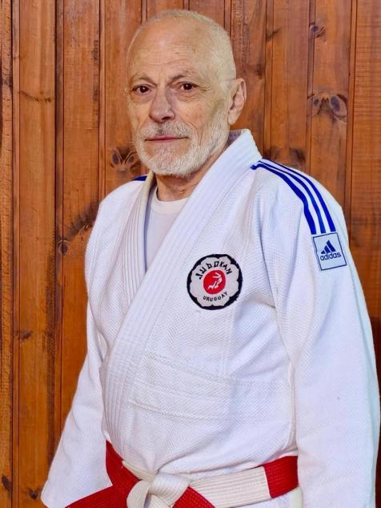

1983
Fundación
El 31 de julio nace la Asociación de Artes Marciales Judokan, con el Sensei José Soca Montero al frente.
Una asociación con personería jurídica que enseña Judo, Jiu-jitsu, Sumo y Kurash en Montevideo desde 1983.

Nacida el 31 de julio de 1983, la asociación fue conducida desde sus inicios por el Sensei José Soca Montero (8.º Dan), junto a un equipo que ya suma más de 3000 atletas formados.
Al día de hoy el club participó en más de 200 campeonatos internacionales y ha conseguido la mayor cantidad de medallas de la historia del judo uruguayo.
Nuestros alumnos integraron la Selección Nacional de Judo en competencias sudamericanas, panamericanas, mundiales y olímpicas.
El 31 de julio nace la Asociación de Artes Marciales Judokan, con el Sensei José Soca Montero al frente.
El club consigue su primera medalla de oro en un campeonato sudamericano.
Primera participación de un alumno del club en unos Juegos Olímpicos.
Maestros con décadas en el tatami. Cada clase tiene la guía de quien ya pasó por el camino que vas a recorrer.


La disciplina principal del club: técnica, caídas seguras, randori y competencia en todas las edades.
Otras artes marciales que complementan la formación física y el trabajo técnico de cada alumno.
Al maestro, al compañero y al reglamento. Es la base de cada clase, dentro y fuera del tatami.
Escribinos o llamanos y coordinamos tu clase de prueba.